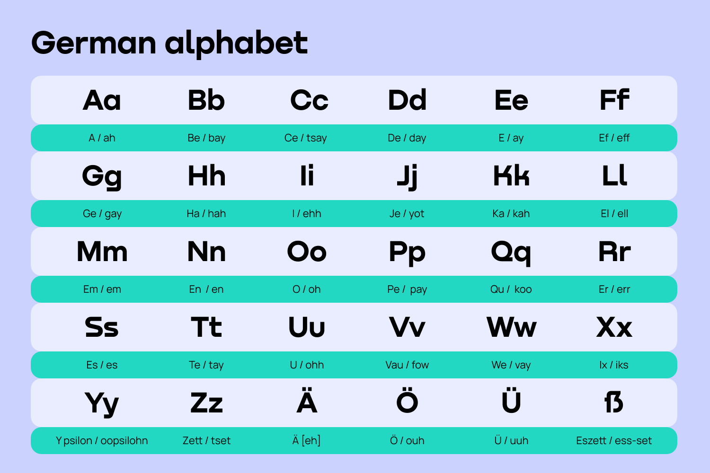

Alphabets and Numbers
The German alphabet consists of 26 letters, just like the English alphabet. However, there are a few additional characters in German that are unique, such as the umlauts (Ä, Ö, Ü) and the Eszett (ß). Understanding the alphabet is crucial for correct pronunciation and spelling in German.
The German Alphabets
The German alphabet has the same letters as the English alphabet, but there are some key differences in pronunciation:
Numbers in German
Numbers in German are similar to those in English but have a few differences in structure and pronunciation. For example:
| Number | German Word |
|---|---|
| 0 | Null |
| 1 | Eins |
| 2 | Zwei |
| 3 | Drei |
| 4 | Vier |
| 5 | Fünf |
| 6 | Sechs |
| 7 | Sieben |
| 8 | Acht |
| 9 | Neun |